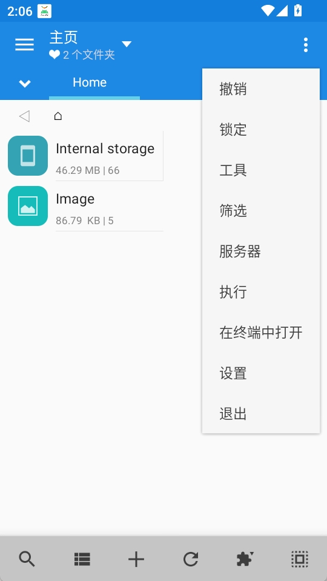

从零上手 MiXplorer：双面板、云存储、WebDAV 一路打通
MiXplorer 是 Android 上被低估的全能文件管理器——支持双面板、云盘直连、WebDAV 服务器、内置 PDF 阅读器。这篇教程带你从零把它装起来、把常用的三个核心场景跑通。
看完这篇教程，你能用官网上这款 MiXplorer 在手机上同时操作两个存储位置、把文件直接从内部存储拖到 OneDrive、甚至让你的笔记 App 通过 WebDAV 直接读写手机上的文件夹。整个过程不需要 root，也不需要额外装别的 App。

准备工作
版本与平台
- 设备：Android 5.0 及以上手机或平板
- 推荐版本：免费版已经够用，Silver 版（付费解锁）多了 HTTPS、XPS 支持等进阶功能，但本文演示的所有操作免费版都能跑
- PDF / EPub 阅读器需要单独装一个 PDF 插件（Play Store 搜
com.mixplorer.addon.pdf，免费），如果不打算用内置阅读器可以跳过
前置条件
- 一台能上网的 Android 设备
- 如果要连云存储，提前准备好对应账号（Google Drive、OneDrive、Dropbox 等都行）
- 如果要启用 WebDAV 服务器，手机和客户端设备要在同一个局域网
第一步：安装并打通你的第一个云盘
MiXplorer 的安装包从下载拿下来装上，第一次打开会问你要不要开启侧边抽屉、要不要显示隐藏文件——全部勾"允许"就行，后面随时能在设置里改。
装好之后先别急着探索界面，先把你最常用的云存储连上。点左上角的汉堡菜单，侧边抽屉拉到底部，找到"添加存储"——这里列了一长串协议：Google Drive、OneDrive、Dropbox、Box、MEGA、WebDAV、SMB、FTP、SFTP……挑你手上有账号的那个。
举个例子，加 OneDrive：
- 侧边抽屉 → 添加存储 → 选 OneDrive
- 浏览器自动弹出登录页，授权完跳回 MiXplorer
- 侧栏多了一个 OneDrive 入口，点进去就是你云端的文件

连好之后你会发现侧栏里内部存储、SD 卡、各个云盘、甚至 SMB NAS 都在同一层级——这意味着后面双面板里你可以左边是内部存储、右边是云盘，直接拖文件过去，不用先下载再上传。
第二步：横屏开双面板，告别来回切标签
云盘连好了，现在把手机横过来。屏幕会自动一分为二：左边内部存储，右边默认还是内部存储，你可以在右面板的侧栏里切到刚才连好的 OneDrive。按住中间那条分割线左右拖一拖，两个面板的宽窄比例可以自由调。
两个面板是完全独立的——左边在 Download 文件夹、右边在 OneDrive 的 Documents，各走各的路。现在长按左边一个 PDF 文件，拖到右边，松手，弹出菜单选"复制"，然后后台就开始跑了。
这个场景我每天都在用：手机截的图在内部存储/Pictures/Screenshots，要同步到 OneDrive 的 Screenshots 文件夹，以前是"打开文件选择器 → 切到 OneDrive → 找到目标文件夹 → 确认上传"四步，现在就是"长按 → 拖 → 松手"。
几个好用的搭配
| 左面板 | 右面板 | 场景 |
|---|---|---|
| 内部存储 / Download | Google Drive | 上传 APK、文档到云盘归档 |
| SD 卡 / Movies | SMB NAS | 备份电影到家里的 NAS |
| OneDrive | Dropbox | 两个云盘之间互传，不用绕电脑 |
| EncFS 加密卷 | 内部存储 | 解密后把文件导出到本地 |
竖屏怎么办？ 默认竖屏是单面板。如果你真的想在竖屏也开双面板（比如平板竖持），可以进设置 → Display → 打开"Force dual pane"，但手机竖屏开两个面板实际字太小不太实用，建议只在横屏用。

第三步：开启 WebDAV 服务器，让其他 App 直接读写你手机
这一步是 MiXplorer 最被低估的功能。你可以把手机开成一台 WebDAV 服务器——任何支持 WebDAV 的 App（Joplin、Obsidian、GoodReader、甚至 Windows 资源管理器和 macOS Finder）都能直接读写你手机上的文件，不需要通过 USB 数据线、不需要通过第三方云盘中转。
启动步骤
- 右上角三点菜单 → Servers → WebDAV Server
- 启动开关打开
- 设置根目录——默认是当前浏览目录，建议改成你专门用来同步的文件夹（比如
/storage/emulated/0/Notes），这样权限范围清晰 - 默认端口是 8080，如果你同时还开了 HTTP 服务器记得把其中一个改到别的端口（比如 8081）
- 设置里开启用户名密码认证，别留空——局域网里任何能访问你手机 IP 的设备都能读写文件，不留密码等于裸奔
启动后 MiXplorer 会显示一个地址，格式是 http://手机的局域网IP:端口。记下这个地址。
接入一个具体客户端试试——Obsidian
- 打开 Obsidian，安装 "WebDAV Sync" 插件
- 填服务器 URL：
http://刚才记下的IP:端口 - 填用户名密码（就是刚才在 MiXplorer 里设的那个）
- 选一个本地 Obsidian 仓库作为同步源
- 点测试连接，通了之后就能双向同步了
同样的流程可以套到 Joplin（设置 → 同步 → WebDAV）、GoodReader（连接 → WebDAV → 填 URL）、甚至 macOS Finder（按 Command+K → 填 http://IP:端口）。Windows 资源管理器的话，在地址栏直接输入那个 WebDAV 地址就能打开。遇到端口冲突或者根目录配置拿不准的地方，去看mixplorer文档上的详细参数表就行。
几个安全提醒
- 只在需要同步的时候开启 WebDAV 服务器，用完关掉——长期开着白白耗电，也增加风险面
- 根目录尽量限制在同步专用文件夹，别把整个内部存储都暴露出去
- Silver 版支持 HTTPS 模式，局域网里用 HTTPS 比纯 HTTP 更安全（虽然局域网里被窃听的概率不高，但开 HTTPS 成本很低）
常见卡点
卡点一：横屏不自动开双面板
进设置 → Display → 确认"Dual pane"开关是打开的。有些机型的自动旋转被锁了，先下拉通知栏把自动旋转打开再横屏。
卡点二：WebDAV 地址别的设备访问不了
90% 的情况是手机和客户端设备不在同一个 Wi-Fi 下。另外 10% 是路由器开了 AP 隔离（客人 Wi-Fi 和主 Wi-Fi 互不相通）——把两台设备都连主 Wi-Fi 就行。确认手机 IP 用的是内网地址（192.168.x.x 或 10.x.x.x），不是公网 IP。
卡点三：内置 PDF 阅读器打不开大文件
免费版的 PDF 插件对 500MB 以上的扫描件 PDF 容易内存不足闪退。这种情况建议直接用 Adobe Reader 或 MuPDF 打开——MiXplorer 本身只是文件管理器，阅读器是附赠功能，专业 PDF 还是交给专业 App。
进阶玩法（一句话）
高级搜索里可以组合条件搜"3 个月没动过的 100MB 以上大文件排除 .zip 和 .7z"，找到直接决定删不删；EncFS 加密卷挂载后能在双面板里解密导出；任务队列可以把一堆复制移动操作排队后台执行不用盯屏幕。
到这里你已经把 MiXplorer 最有生产力的三个场景跑通了：云存储直连、双面板互传、WebDAV 服务器。本文涉及到的配置样例和测试素材，开源分别放在了GitHub、Gitee、GitCode，Gitee 和 GitCode 对国内用户来说 clone 起来更顺手。